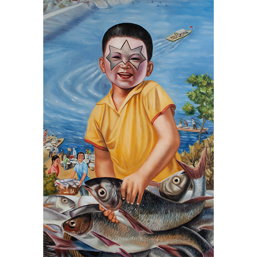

Notes
Dimensions are approximate and are based on visual comparison and available documentation.
This work references the Chinese propaganda poster Level lake in a high gorge Abundant harvest of grain and fish.
Selected Online Circulation
Selected examples of the work’s online circulation, reproduction, or discussion. This list is not exhaustive; it is intended to document representative appearances of the image beyond formal exhibition and publication records.